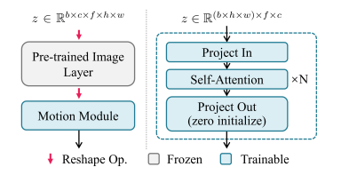

AdimateDiff
AnimateDiff: Animate Your Personalized Text-to-Image Diffusion Models without Specific Tuning
阅读时间：2023-11-20 阅读目的：在做视频大模型相关的项目，涉及到解决视频一致性问题，SD+AnimateDiff是一个比较成熟的方式，通过阅读论文看看他是怎么做的
Abstract
SD + lora和dreambooth等下游配套已经使得用户可以画出好看的图片，现在如今让图片动起来的需求越来越大。
文章提出了一个框架，让图片在现有模型下运动起来。
该框架的核心是在T2I模型中插入一个初始化的运动建模模块，并利用视频数据进行训练
Introduction
现在有文本生成视频的需求，但是现有的T2V太复杂了（引用了Gen1、VDM、magicVideo三篇论文），个性化程度不高，用户不好使用，因此论文提出了一个运动建模模块，给定个性化T2I模式，例如用户训练或从Huggingface下载的DreamBooth或LoRA，目标是在保留其原始领域知识和质量的同时，将其转换为几乎没有训练成本的动画生成器
例如：如果T2I模型是经过个性化操作的（引入了lora），在这种情况下，模型应该能够生成个性化的动画片段。能做到前景/背景分割、角色身体运动等
Preliminaries
让图片动起来的核心是学习到时序特征，这点T2V模型可以做到。但是个性化的图片常有，个性化的视频却不常有，使用大量个性化的视频训练一个模型并不合理。因此作者选择训练一个可推广的运动建模模块，并在推理时将其插入个性化的T2I模型。
运动建模模块的细节 
大体和VDM等没区别，主要在于AnimateDiff冻结SD，只训练自己的模块
我的看法
作者通过插入额外的初始化运动建模模块，并在视频数据上进行训练。这种方法其实和magicEdit类似：SD就负责生成图片、额外再训练一个用来保证结构完整的模块和用来时序建模的模块。将视频生成的三个核心（图像语义、运动一致性、结构控制）解耦。